What makes a Steam game successful?
Defining success fairly across 125,854 Steam games, testing which launch-time features go with it, and predicting hits with SQL and Python.
- Data
- Steam Games Dataset (Kaggle), 125,854 games
- Tools
- pandas, DuckDB, SQL, scikit-learn
- Type
- Personal project, Kaggle notebook
Abstract
Steam is extremely unequal: in this dataset the top 1% of games hold 80% of all user reviews. So "above average" is a poor definition of success. I define success four ways (commercial, quality, engagement, and a strict hit that needs both commercial and quality success) and use each to test which features known at launch go with success. Achievements, Steam categories, supported languages and DLC are the strongest indicators, and they hold under all four definitions. A gradient-boosting model trained on games up to 2021 and tested on later releases reaches a ROC AUC of 0.80 for hit. Its top 10% of predictions contain 43% of the actual hits. These are associations, not causes.

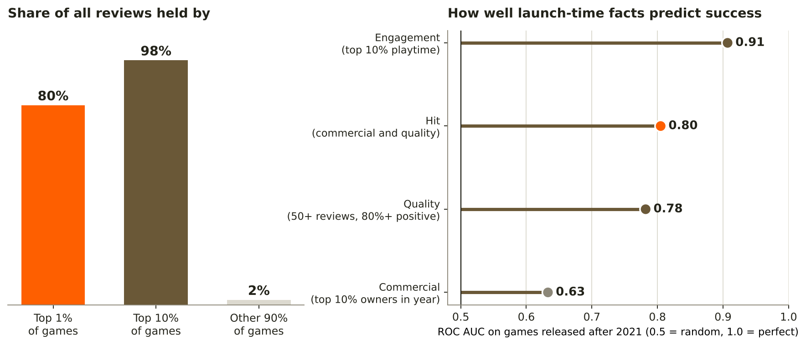
1. Introduction and research question
Releasing on Steam has never been easier, and the store has never been more crowded. SteamDB counted about 19,000 releases in 2024, up from 14,533 in 2023. The dataset used here shows the same growth (Figure 2). Most of those games earn very little: by Gamalytic's estimates, about 40% of 2025 releases earned less than the $100 Steam listing fee.

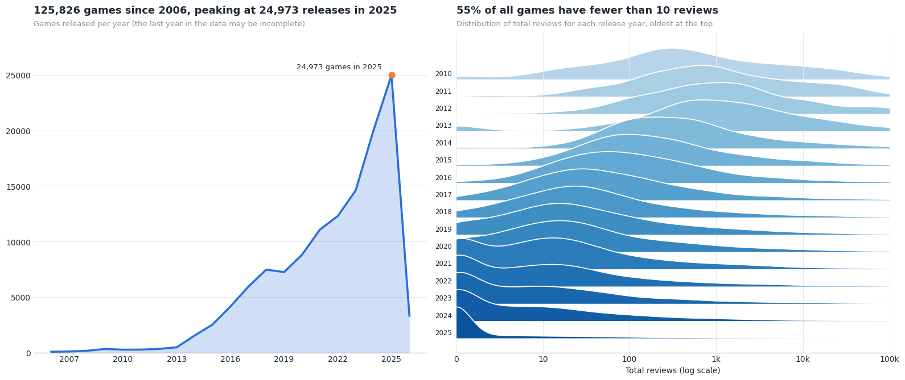
For a developer or publisher, the useful question is not which games became famous. It is which facts, known on launch day, go with a better chance of success. This project asks three questions:
- Definition: what is a fair way to define "successful" when games of different ages are compared?
- Indicators: which features known at launch go with success, and do they hold under different definitions?
- Prediction: how well can a model trained only on launch-time facts identify future successes?
2. Data: source, model and storage
Source
The data is the Steam Games Dataset by FronkonGames on Kaggle: 125,855 games and 40 columns, including price, release date, platforms, languages, genres, tags, review counts, playtime and an estimated owners range. Owner ranges follow the SteamSpy method, which samples user profiles and extrapolates from them. That limits how precise commercial success can be (see Section 5).
Cleaning
The raw file had 39 column names but 40 values in every row, because two names were glued together (DiscountDLC count). Read naively, every column after that point shifts by one and AppID holds game names. I split the header before loading. Table 1 lists the other cleaning steps.
| Step | Result |
|---|---|
| Fix the glued header | 40 names for 40 values; every column lines up |
| Check duplicates | 0 duplicate rows, 0 duplicate AppIDs |
| Remove unnamed games | 125,855 → 125,854 rows |
| Drop columns over 90% empty | 4 dropped: Reviews, Metacritic url, Score rank, Movies |
| Parse dates and owner ranges | 0 missing release dates, 0 missing owner ranges |
| Turn genre, tag and language text into lists; add counts and flags | 58 columns ready for analysis |
Data model
A game has several genres and tags. In pandas that is a list inside a cell; in SQL it belongs in a separate bridge table. I stored the cleaned data as four tables in DuckDB, a database that runs inside Python, so that "success rate per genre" is a plain join and GROUP BY, and "how did this studio's earlier games do?" is a window function (Figure 3).

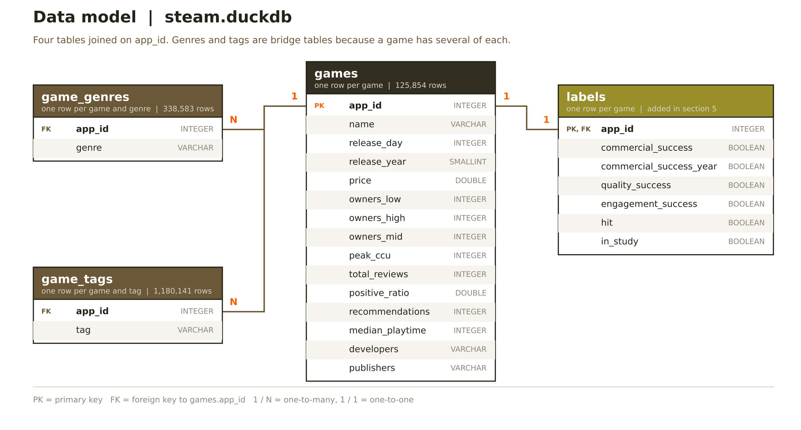
steam.duckdb. Genres (338,583 rows) and tags (1,180,141 rows) are bridge tables, and success labels are added in their own table.Storage
Changing column types without changing any value (for example 64-bit integers to 16-bit, repeated text to categories) cut the tables from 148.9 MB to 53.4 MB in memory. Every change was checked to be lossless. On disk, the format makes a large difference (Table 2).
| Format | Size (MB) | Read time (s) | Size vs CSV |
|---|---|---|---|
| CSV | 41.2 | 0.65 | 100% |
| DuckDB file | 26.0 | 0.26 | 63% |
| CSV + gzip | 11.3 | 0.75 | 27% |
Read times are from one run and vary between machines; the size differences are the reliable result.
3. Methodology
Defining success
Because attention is so concentrated (Figure 4), success is defined as a top percentile, not as above average. Table 3 lists the four definitions. Commercial success is measured within each release year: a 2012 game has had a decade to gather owners, a 2023 game has not, and one global cutoff would simply reward age (Figure 6).
| Label | Rule | Question it answers | Share of games |
|---|---|---|---|
| Commercial | Top 10% by estimated owners within its release year | Did it reach many players, compared with games of the same age? | 22.9% |
| Quality | At least 50 reviews and at least 80% positive | Do buyers like it? | 14.0% |
| Engagement | Among games with 50+ reviews, top 10% by median playtime | Do players keep playing? | 2.5% |
| Hit | Commercial and quality at once | Both: the strictest definition | 5.9% |
Commercial success covers more than 10% of games because owners come in wide buckets, so many games tie at the cutoff.
Testing indicators
Each feature known at launch is compared with one success label at a time, using three tools (Table 4).
| Tool | Used for | How to read it |
|---|---|---|
| ROC AUC | Numeric features (price, languages, achievements) | Chance that a random successful game scores higher than a random other game. 0.5 = no signal. |
| Success rate with a Wilson 95% interval | Buckets and yes/no features | Shows the shape of the relationship. Where the intervals of two groups don't overlap, the difference is unlikely to be noise. |
| Lift | Genres and tags | Success rate of the group divided by the overall rate. 1.0 = average. Only groups with at least 300 games are shown. |
Modelling
The model is scikit-learn's HistGradientBoostingClassifier, trained on 29 features (15 numeric plus 14 genre flags). Three rules keep the result honest:
- No outcome columns as features. Owners, reviews, playtime, peak players and Metacritic score define or follow success, so they are excluded. Player-voted tags are excluded for the same reason.
- A time-based split. The model trains on 50,646 games released up to 2021 and is tested on 69,983 later games. A random split would let it learn from the future (scikit-learn on data leakage).
- Several metrics. ROC AUC for ranking, average precision for rare labels, a cumulative gains curve for practical use, and calibration to check the predicted chances.
Feature importance comes from two angles: permutation importance for single features, and ablation (refitting without a whole group of features) for groups. As extensions, I added developer track-record features computed in SQL, a store-text score from TF-IDF plus a linear model, and an ordinal model of owner buckets following Frank and Hall (2001).
4. Analysis
4.1 Attention is winner-takes-most
Only 45% of games reach 10 reviews, 5.7% reach 1,000 and 1.4% reach 10,000. The top 1% hold 80% of all reviews and the top 10% hold 98%, a Gini coefficient of 0.98 (Figure 4). This matches outside revenue estimates, where only 8% of 2025 releases earned more than $100,000.

4.2 Reach and quality are different things
The reach metrics move together: owners and review count correlate at 0.66 (Spearman). The share of positive reviews does not correlate with owners at all (0.00), so a widely owned game is not necessarily a well-liked one (Figure 5). As a result only 26% of commercial successes are also well liked, and hit covers just 5.9% of games (Table 3).

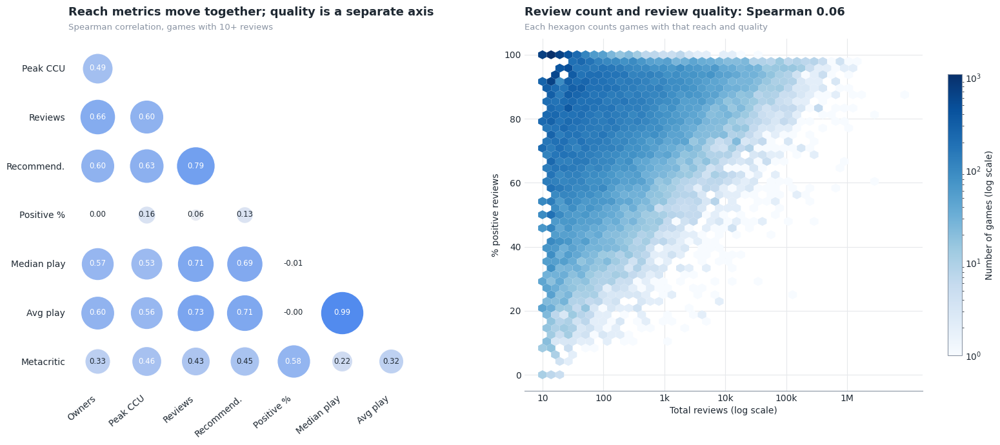
4.3 A fair label has to account for age
With one global owners cutoff, 60 to 80% of games from 2009 to 2013 count as commercially successful, against under 10% of games from 2022 onwards. The per-year cutoff keeps the rate roughly flat at 10 to 20% (Figure 6). The 2025 spike in the per-year line is caused by owner ties: most 2025 games sit in the same bucket.

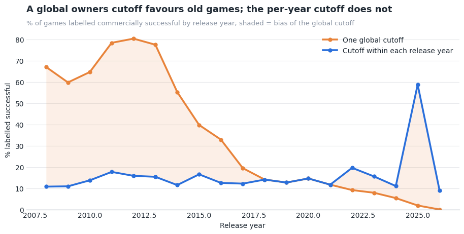
4.4 Which launch-time features go with success?
For hit, achievements (AUC 0.73), number of Steam categories (0.72) and number of supported languages (0.72) separate successful games best, followed by DLC count (0.69), store description length (0.66) and price (0.65). Release year scores below 0.5 (0.44), so newer games are slightly less likely to be hits (Figure 7).

The relationships are mostly steady climbs (Figure 8). Games with 100+ achievements are hits 34.7% of the time against 2.3% with none, and games in 11+ languages 15.3% against 2.6% for one language. Price is the exception: the hit rate rises up to $20 to $30 (15.6%), then falls for games above $30 (6.4%).

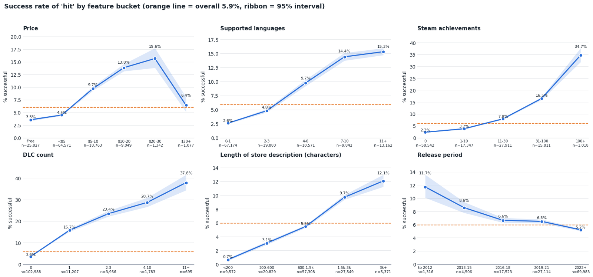
Among yes/no features, DLC shows the largest gap: 19.6% of games with DLC are hits, against 3.6% without (Figure 9). Free-to-play games do slightly worse than paid games.

Among genres, RPG has the highest lift (1.5 times the average hit rate), followed by Simulation, Adventure and Strategy. Violent and Education are far below average (Figure 10). Genres overlap, so the lifts can't be added together.

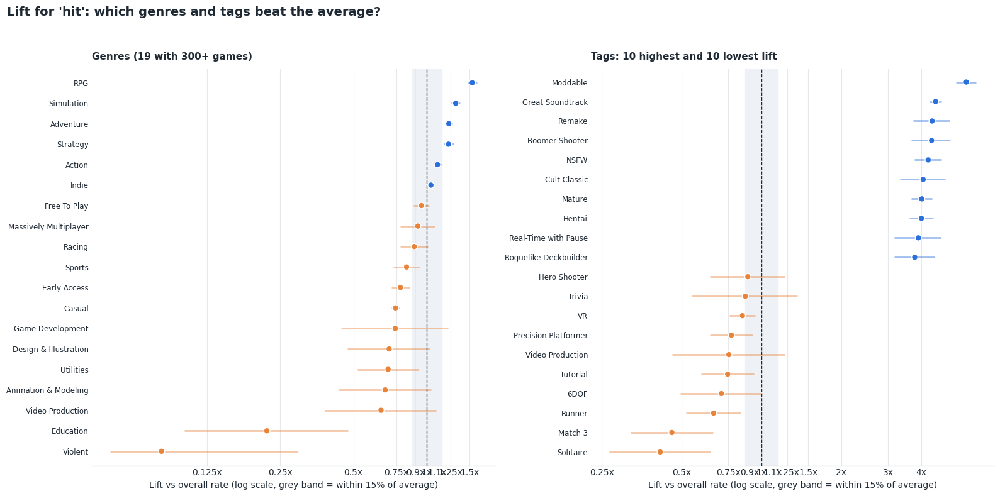
4.5 Do the indicators hold under every definition?
A finding that holds for only one definition is a property of that definition, not of the games. Seven numeric indicators stay on the same side of 0.5 under all four labels: categories, languages, description length, achievements, price, DLC and audio languages. Release year flips: newer games score higher on the commercial label (largely because of owner ties in recent years) but lower on quality and engagement (Figure 11). RPG is the only genre above average under all four definitions.

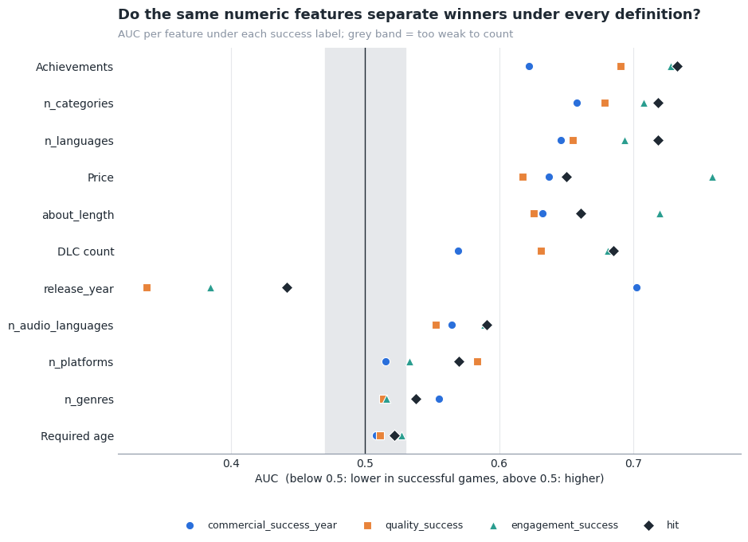
4.6 How well can success be predicted?
Using only launch-time facts, the model ranks newer games well above chance for every label. Engagement is easiest to predict (AUC 0.91) and commercial success hardest (0.63), probably because commercial success depends most on marketing, which is not in the data (Table 5).
| Label | ROC AUC | Avg. precision | Base rate | Better than random |
|---|---|---|---|---|
| Engagement | 0.91 | 0.24 | 1.9% | 12.9x |
| Hit | 0.80 | 0.24 | 5.2% | 4.5x |
| Quality | 0.78 | 0.30 | 9.2% | 3.3x |
| Commercial | 0.63 | 0.43 | 29.9% | 1.4x |
In practical terms, if you check the 10% of new games the model rates highest, you find 43% of all hits; the top 30% contains 72% (Figure 12). Predicted chances above about 10% are too high, because the hit rate is lower in the test years (5.2%) than in the training years (6.9%) (Table 7).

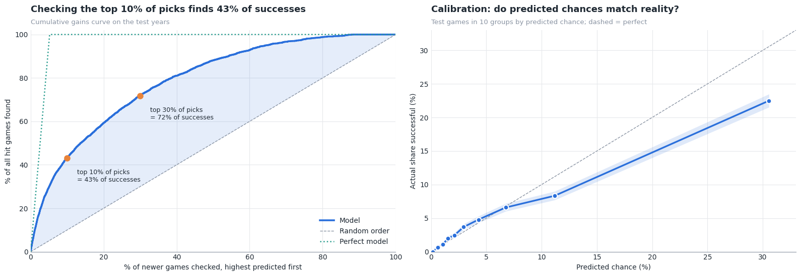
Supported languages is by far the most important single feature, followed by categories, DLC and achievements (Figure 13). As a group, store page and extras (description length, website, DLC and achievements) matter most: removing them costs 0.026 AUC. Removing genres and categories together costs nothing, because the other features already carry that information.

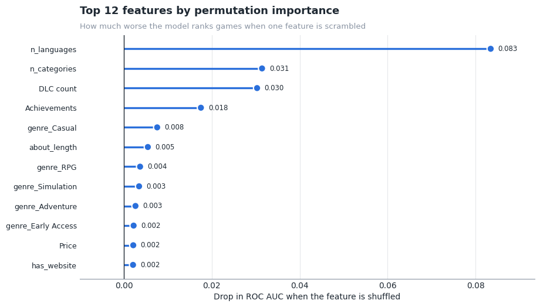
4.7 Do developer history and store text help?
A developer's track record (how many games they released before, and how those did) adds 0.030 AUC for hit and 0.037 for quality. A score built from the store-page text adds less, except for commercial success (Table 6, Figure 14).
| Feature set | Commercial | Quality | Engagement | Hit |
|---|---|---|---|---|
| Baseline | 0.633 | 0.782 | 0.907 | 0.805 |
| + developer history | 0.633 | 0.819 | 0.920 | 0.835 |
| + store text | 0.655 | 0.792 | 0.918 | 0.817 |
| + both | 0.651 | 0.818 | 0.926 | 0.836 |

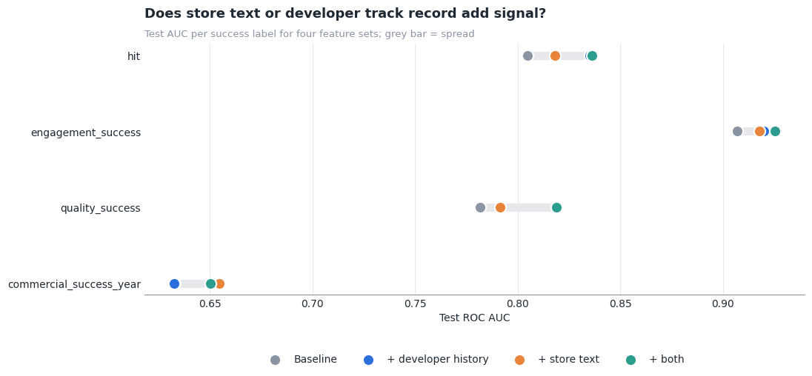
5. Limitations and further research
Limitations
- Association, not cause. Successful games can afford more languages, DLC and achievements, so some indicators may follow success rather than drive it. DLC in particular is usually released after a game has sold well, so its gap in Figure 9 partly reflects success rather than predicting it.
- Owners are estimates in wide buckets. SteamSpy says its figures are not 100% correct and counts under 30,000 owners are unreliable. Most games sit in the lowest bucket, which is why the commercial label covers 22.9% of games instead of 10% (Table 3).
- The base rate shifts over time. The hit rate is 6.9% in the training years and 5.2% in the test years, and the commercial rate more than doubles (Table 7). Predicted chances need recalibrating before use (Figure 12).
- The biggest drivers are missing. Marketing spend, wishlists, press coverage and the quality of the game itself are not among the dataset's columns. That limits commercial prediction most (AUC 0.63, Table 5).
- Some features change after launch. DLC count, achievements and the store description can be edited later. Developer history uses exact name matches and measures earlier games at the end of the data, not at the later game's launch.
- The thresholds are choices. The 90th percentile, 50 reviews and 80% positive are defaults. The stability check (Figure 11) shows the main indicators hold across definitions, but not every possible threshold was tested.
| Label | Train | Test | Test / train |
|---|---|---|---|
| Commercial | 13.2% | 29.9% | 2.26 |
| Quality | 20.6% | 9.2% | 0.45 |
| Engagement | 3.5% | 1.9% | 0.55 |
| Hit | 6.9% | 5.2% | 0.75 |
Further research
- Point-in-time data. Dated snapshots of reviews and owners (for example from SteamDB) would allow measuring each game at a fixed age and building developer history as it looked on launch day.
- Wishlist and follower data, the closest public stand-in for pre-launch demand, would most likely improve commercial prediction.
- Better text features. Replace TF-IDF with sentence embeddings of the store description and compare against the +0.012 AUC measured here (Table 6).
- Looser developer matching (lowercase, strip "Inc." and "Ltd.") so a studio spelled two ways counts once.
- Causal designs, such as comparing the same game before and after adding languages, to test whether the indicators drive success or follow it.
6. Conclusion
Success on Steam is rare and concentrated, so it has to be defined as a top percentile and compared within release years to be fair to newer games (Figures 4 and 6). Reach and quality are separate dimensions (Figure 5). Games that launch with more languages, more Steam categories, achievements, a fuller store page and a mid-range price are consistently more likely to succeed, under every definition tested (Figure 11). Launch-time facts alone rank future hits well (AUC 0.80, 43% of hits in the top 10% of predictions), and a developer's track record adds a little more (Table 6). What the data can't tell us is whether those features cause success or simply mark games made by teams that were already likely to succeed.

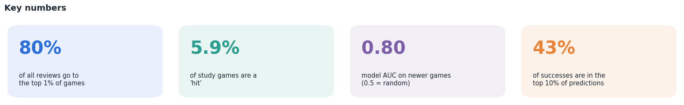
References
- FronkonGames. Steam Games Dataset. Kaggle.
- SteamSpy. About SteamSpy (owner estimation method and accuracy).
- GamingOnLinux (2025). Valve saw a record-breaking nearly 19,000 games released on Steam in 2024.
- GameDev Reports. SteamDB: in 2023, 14,533 games were released on Steam.
- MP1st. 40% of Steam games in 2025 earned less than $100 (Gamalytic estimates).
- Frank, E. and Hall, M. (2001). A Simple Approach to Ordinal Classification. ECML 2001.
- scikit-learn. HistGradientBoostingClassifier and permutation importance.
- DuckDB. Documentation.